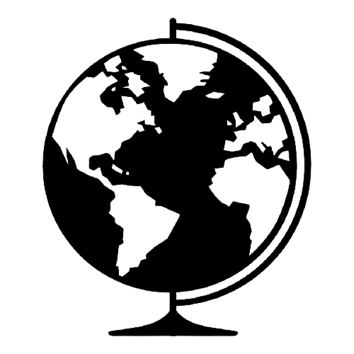
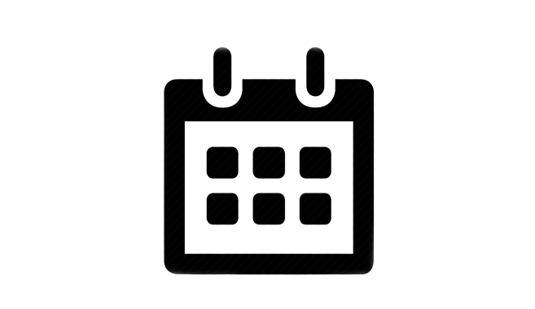

En 2011, à Marseille, Wiko est né dans un but précis : mettre à la disposition de tout le monde des smartphones en proposant des technologies accessibles à tous. Depuis, l'équipe Wiko continue d'apporter au marché du smartphone français des technologies toujours plus performantes tout en gardant le même objectif : un prix le plus bas possible.
| Fondateur Laurent Dahan |
|
|  | Pays d'origine France |
|  | Ancienneté 11 ans |
 |
Siège social Marseille |
Plus que jamais, la protection environnementale est au cœur de nos sociétés pour éviter des impacts qui seraient irréversible dans le monde. Dans l'optique de réduire leur empreinte écologique, Wiko décide en 2021 de proposer des emballages 100% recyclés, soit à partir de 70% de déchets papier et 30% de papier brut. Les autres éléments du paquet sont compostables et biodégradables. Pour limiter l'utilisation d'encre et de vernis, Wiko décide de limiter à deux couleurs maximum les écrits sur leurs boîtes. Ainsi, Wiko compte bien continuer dans cette voix pour atteindre un jour le 100% recyclable.
Aujourd'hui, le rayonnement de Wiko est international : c'est une marque de smartphone installée dans plus de 30 pays autour du globe, tout en restant très attachées à ses racines françaises.